Todo lo que hace falta para un juego 2D: la ventana, el dibujo, los sprites y sus
animaciones, el teclado, el ratón, los mandos y la pantalla táctil, el sonido, los mapas,
la física, los menús... Se usa con importar "juego".
Los 46 ejemplos de esta página se ejecutan al
generarla, sin pantalla, y la imagen de cada uno es una captura real de lo que
dibuja. Si algo deja de funcionar, la página deja de cuadrar y la integración continua lo
detecta. Para la lista completa de funciones y opciones, mira la
especificación;
para empezar desde cero, el tutorial.
Nada coincide con esa búsqueda.
Empezar
La ventana y el bucle
Un juego es un bucle: en cada vuelta se mira la entrada, se mueven las cosas, se dibuja todo y juego.presentar() lo enseña, espera al siguiente fotograma (60 por segundo) y lee el teclado, el ratón y los mandos. juego.abierto() pasa a falso al cerrar la ventana.
Al guardar el archivo con el juego en marcha, el juego sigue con el código nuevo sin perder dónde estaba (recarga en caliente); F5 empieza de cero.
importar"juego"
juego.abrir("Mi primer juego", 480, 270)
sea x = 40mientras juego.abierto() {
x = x + 150 * juego.dt() # 150 píxeles por segundo, vaya a los fps que vaya
juego.limpiar([25, 30, 45])
juego.circulo(x, 135, 24, [255, 200, 60])
juego.texto("HOLA, LINCE", 20, 20, {"escala": 3})
juego.presentar()
}
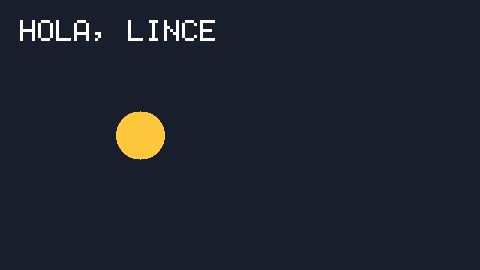
Captura real, sacada al generar esta página.docs/juego/ejemplos/010_primer_juego.lince
Píxeles grandes
Con {"escala": n}, la ventana es n veces mayor y cada píxel del juego se ve como un cuadrado de n × n, como en las consolas portátiles. Todo se sigue midiendo en el tamaño pequeño (aquí 160 × 90). juego.pantalla_completa() lo pone a pantalla completa, escalado sin deformarse.
Captura real, sacada al generar esta página.docs/juego/ejemplos/020_pixeles_grandes.lince
Dibujar
Formas y colores
Un color es [rojo, verde, azul] (de 0 a 255), con un cuarto número para la transparencia, o un texto como "#ffc850". Lo que se dibuja después tapa a lo de antes.
importar"juego"
juego.abrir("Formas", 480, 270)
mientras juego.abierto() {
juego.limpiar([30, 30, 40])
juego.rectangulo(30, 30, 120, 80, [200, 70, 70])
juego.contorno(180, 30, 120, 80, "#ffc850")
juego.circulo(400, 70, 45, [80, 160, 230])
juego.circulo(370, 90, 45, [255, 255, 255, 90]) # medio transparente
juego.linea(30, 160, 450, 160, [120, 220, 120])
para (i = 0; i < 8; i++) {
juego.rectangulo(30 + i * 55, 190, 45, 45, [30 * i, 255 - 30 * i, 160])
}
juego.presentar()
}
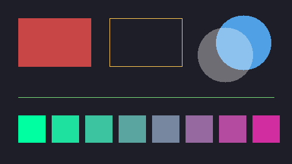
Captura real, sacada al generar esta página.docs/juego/ejemplos/110_formas_y_colores.lince
Capas
Con "capa" (o tras juego.capa(n)), lo dibujado espera a presentar() y sale ordenado: las capas más altas encima. Aquí cada árbol y el jugador llevan "capa": y, así que lo que está más abajo en la pantalla tapa a lo de arriba, se dibuje en el orden que se dibuje. El fondo va antes de la primera capa (debajo de todo) y el marcador en una capa alta.
importar"juego"
juego.abrir("Capas", 480, 270)
fijo ARBOL = juego.sprite(["..GG..", ".GGGG.", "GGGGGG", ".GGGG.", "..TT..", "..TT.."], {"G": [60, 150, 70], "T": [120, 80, 40]})
fijo LINCE = juego.hoja("recursos/lince.png", 16)
fijo ARBOLES = [[60, 120], [150, 60], [210, 150], [300, 90], [360, 170], [420, 70]]
mientras juego.abierto() {
juego.limpiar([130, 190, 110]) # antes de las capas: el fondo
juego.dibujar(LINCE, 190, 150, {"cuadro": 0, "escala": 4, "capa": 150 + 64}) # sus pies, en y = 214paracadalista a en ARBOLES {
juego.dibujar(ARBOL, a[0], a[1], {"escala": 12, "capa": a[1] + 72}) # la base del tronco
}
juego.capa(1000)
juego.texto("CADA COSA EN SU CAPA", 12, 12, {"escala": 2})
juego.capa()
juego.presentar()
}
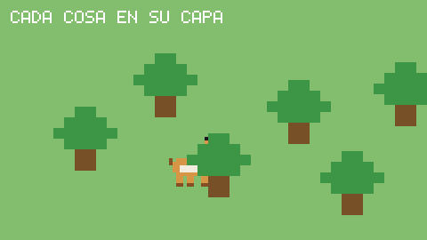
Captura real, sacada al generar esta página.docs/juego/ejemplos/115_capas.lince
Oscurecer la pantalla
juego.cubrir(color) pinta toda la ventana por encima de lo dibujado, sin moverse con la cámara: con un negro medio transparente se oscurece para una pausa, y con otro color se tiñe (agua, daño, noche).
Captura real, sacada al generar esta página.docs/juego/ejemplos/120_cubrir.lince
Luces y oscuridad
juego.luz(x, y, radio) pone una luz en el mundo (respeta la cámara), con color, intensidad y forma: "circulo" o "cono", una linterna que apunta hacia su angulo con su apertura. juego.dibujar_luces(ambiente) oscurece lo dibujado hasta ese color salvo donde hay luz, y las luces de colores se suman.
Se llama después de dibujar el mundo y antes del marcador, que así no se oscurece (o con "capa"). Las luces valen para ese fotograma: se ponen otra vez en cada uno, y si se mueven o parpadean, se mueve la luz.
importar"juego"importar"matematica"
juego.abrir("Luces", 480, 270)
mientras juego.abierto() {
sea t = juego.tiempo()
juego.camara(20, 0)
juego.limpiar([60, 70, 60])
para (x = 0; x < 520; x += 40) { # un suelo de baldosas de colorespara (y = 0; y < 280; y += 40) {
juego.rectangulo(x, y, 38, 38, si (x + y) % 80 == 0 { [120, 140, 110] } sino { [100, 110, 150] })
}
}
juego.rectangulo(118, 168, 8, 24, [120, 80, 40]) # la antorcha
juego.luz(122, 165, 110 + matematica.seno(t * 13) * 6, {"color": [255, 170, 80]}) # parpadea un poco
juego.luz(330, 200, 260, {"forma": "cono", "angulo": -40, "apertura": 50, "color": [255, 255, 220]})
juego.luz(400 + matematica.seno(t * 2) * 30, 80, 45, {"color": [80, 160, 255], "intensidad": 0.9})
juego.dibujar_luces([25, 25, 50])
juego.camara()
juego.texto("NOCHE EN EL CASTILLO", 10, 10, {"escala": 2, "color": [255, 255, 255]}) # el marcador, sin oscurecer
juego.presentar()
}
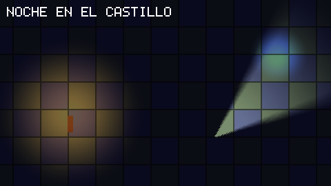
Captura real, sacada al generar esta página.docs/juego/ejemplos/125_luces.lince
Texto y letras
Texto con la letra incluida
Lince trae una letra de píxeles (mayúsculas, cifras, signos; las tildes y la ñ se marcan). escala la agranda, color la pinta y alinear ("centro" o "derecha") cambia de qué lado cuenta la x. juego.ancho_texto() dice lo que ocupa, para centrar a mano.
Captura real, sacada al generar esta página.docs/juego/ejemplos/210_texto.lince
Fuentes .ttf
juego.fuente(ruta, tamaño) carga una fuente TrueType u OpenType (aquí, Press Start 2P, con licencia libre OFL). Trae el español entero: tildes, ñ, ¿ y ¡. Con ancho, el texto se parte en líneas por los espacios; juego.medir_texto() da [ancho, alto].
importar"juego"
juego.abrir("Fuentes", 480, 270)
fijo LETRA = juego.fuente("recursos/PressStart2P-Regular.ttf", 16)
fijo PEQUENA = juego.fuente("recursos/PressStart2P-Regular.ttf", 8)
sea dialogo = "¿Has visto al lince? Dicen que vive en la sierra, junto al río."mientras juego.abierto() {
juego.limpiar([15, 20, 35])
juego.texto("¡Año de nieves!", 240, 30, {"fuente": LETRA, "alinear": "centro", "color": [255, 220, 90]})
juego.texto(dialogo, 40, 90, {"fuente": PEQUENA, "ancho": 400, "color": [220, 230, 240]})
sea medida = juego.medir_texto(dialogo, {"fuente": PEQUENA, "ancho": 400})
juego.contorno(34, 84, medida[0] + 12, medida[1] + 12, [90, 110, 160])
juego.presentar()
}
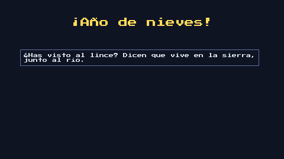
Captura real, sacada al generar esta página.docs/juego/ejemplos/220_fuentes.lince
Texto en una caja
juego.texto_caja(t, x, y, ancho, alto, opciones) parte el texto en líneas dentro de la caja; si no cabe, la última acaba en «...» y devuelve lo que falta, para la página siguiente. vertical lo pone arriba, en el centro o abajo de la caja, y medir dice lo que faltaría sin escribir nada.
importar"juego"
juego.abrir("Texto en una caja", 480, 270)
fijo LETRA = juego.fuente("recursos/PressStart2P-Regular.ttf", 8)
fijo CUENTO = "Había una vez un lince que vivía en lo más hondo del bosque y salía de noche a buscar estrellas caídas."mientras juego.abierto() {
juego.limpiar([30, 30, 50])
juego.rectangulo(20, 30, 200, 60, [60, 60, 100])
sea resto = juego.texto_caja(CUENTO, 28, 38, 184, 44, {"fuente": LETRA, "escala": 2})
juego.rectangulo(260, 30, 200, 60, [60, 60, 100])
juego.texto_caja(resto, 268, 38, 184, 44, {"fuente": LETRA, "escala": 2})
juego.rectangulo(20, 130, 440, 110, [60, 60, 100])
juego.texto_caja("En el centro de la caja", 20, 130, 440, 110,
{"fuente": LETRA, "escala": 2, "alinear": "centro", "vertical": "centro", "color": [255, 220, 80]})
juego.presentar()
}
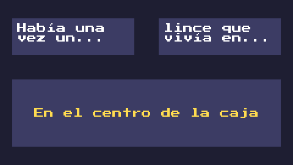
Captura real, sacada al generar esta página.docs/juego/ejemplos/230_texto_caja.lince
Imágenes y sprites
Dibujos hechos con texto
juego.sprite(filas, colores) hace una imagen sin archivos: un carácter por píxel, y cada carácter con su color (los que no están, transparentes). Sirve para empezar sin dibujos y para cosas pequeñas.
Captura real, sacada al generar esta página.docs/juego/ejemplos/310_sprite.lince
Girar, voltear, teñir
juego.dibujar(imagen, x, y, opciones) admite escala, angulo, espejo (mirar al otro lado), voltear, alfa, color (teñir), blanco (el destello de cuando a alguien le dan) y mezcla ("sumar" para luces y fuego). Con centrado, la x y la y son el centro.
Captura real, sacada al generar esta página.docs/juego/ejemplos/320_dibujar_opciones.lince
Hojas de sprites
Una hoja con todos los fotogramas
Una hoja de sprites es una sola imagen con todos los fotogramas, una animación por fila. juego.hoja(ruta, 16) la parte en cuadros de 16 × 16, numerados desde 0. Con fila, cuadro cuenta dentro de esa fila, y juego.cuadro(cuantos, por_segundo) dice cuál toca ahora. juego.cuadros_de(hoja, fila) cuenta los cuadros con dibujo de una fila (en una rejilla, las celdas vacías del final no cuentan).
Captura real, sacada al generar esta página.docs/juego/ejemplos/410_hoja.lince
Hojas desordenadas
Sin decir cómo partirla, juego.hoja(ruta) busca sola las figuras (lo separado por fondo), las agrupa en filas y las ordena, aunque midan distinto. Así sirven las hojas descargadas tal cual. Con {"fondo": "auto"} también quita un fondo de color.
Captura real, sacada al generar esta página.docs/juego/ejemplos/420_hoja_sola.lince
Animaciones a partir de un dibujo
Con un solo dibujo, juego.animar(imagen, tipo) hace los cuadros de una animación: "andar" y "correr" mueven las piernas; "respirar", "saltar", "golpe", "morir", "flotar" y "girar" mueven el dibujo entero. Da una hoja, así que se puede cambiar después por una dibujada a mano sin tocar el resto.
importar"juego"
juego.abrir("Animar", 480, 270)
fijo DIBUJO = juego.hoja("recursos/lince.png", 16)
fijo QUIETO = juego.sprite(["..X..", ".XXX.", "XXXXX", ".X.X.", ".X.X."], {"X": [230, 140, 60]})
fijo TIPOS = ["respirar", "saltar", "flotar", "girar", "morir"]
sea hojas = []
paracadatexto t en TIPOS { hojas.agregar(juego.animar(QUIETO, t)) }
mientras juego.abierto() {
juego.limpiar([25, 35, 50])
para (i = 0; i < TIPOS.longitud(); i++) {
juego.dibujar(hojas[i], 30 + i * 90, 90, {"cuadro": juego.cuadro(hojas[i]["cuadros"], 8), "escala": 8})
juego.texto(TIPOS[i].mayusculas(), 30 + i * 90, 190, {"escala": 1})
}
juego.presentar()
}
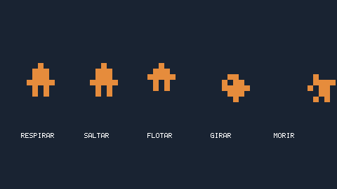
Captura real, sacada al generar esta página.docs/juego/ejemplos/430_animar.lince
Animador
El animador
juego.animador(hoja, animaciones) lleva por ti qué animación toca, desde cuándo y qué viene después. Cada animación dice su fila (o sus cuadros), por_segundo, si se repite y la siguiente. juego.animacion(pj, "andar") la cambia (si ya estaba en ella, sigue por donde iba) y juego.dibujar(pj, x, y) dibuja el cuadro que toca.
Captura real, sacada al generar esta página.docs/juego/ejemplos/510_animador.lince
Entrada
Teclas y ratón
juego.tecla("derecha") dice si está pulsada ahora; juego.tecla_pulsada("espacio"), si se ha pulsado en este fotograma (para saltar una sola vez), y juego.tecla_soltada(), si se ha soltado. Igual con los botones del mando (boton, boton_pulsado, boton_soltado). juego.raton() da [x, y] y juego.clic(1), si se ha hecho clic con el botón izquierdo (juego.boton_raton(1) si está pulsado, y juego.boton_raton_soltado(1) si se acaba de soltar).
importar"juego"
juego.abrir("Entrada", 480, 270)
sea x = 60sea marcas = []
mientras juego.abierto() {
si juego.tecla("derecha") { x = x + 200 * juego.dt() }
si juego.tecla("izquierda") { x = x - 200 * juego.dt() }
si juego.clic(1) y marcas.longitud() < 5 { marcas.agregar(juego.raton()) }
juego.limpiar([30, 30, 45])
juego.rectangulo(x, 180, 40, 40, [230, 140, 60])
paracadalista m en marcas { juego.circulo(m[0], m[1], 10, [120, 200, 255]) }
juego.texto("RATÓN: {juego.raton()}", 20, 20, {"escala": 2})
juego.presentar()
}
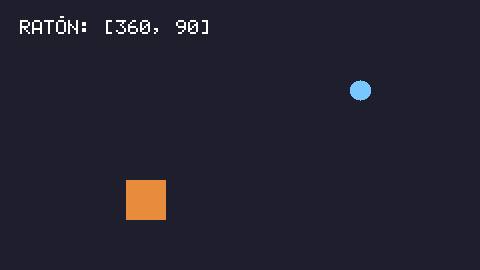
Captura real, sacada al generar esta página.docs/juego/ejemplos/610_teclas_y_raton.lince
Acciones: teclado y mando a la vez
Una acción junta varias entradas con un nombre: teclas, botones de mando ("mando:a"), la palanca ("mando:izq_x-"), el ratón o la pantalla táctil. El juego pregunta por la acción y funciona igual con todo. juego.direccion("izquierda", "derecha") va de −1 a 1, gradual con la palanca.
Con mandos, en un móvil sale solo un mando en la pantalla táctil (ver Móvil), y el jugador puede cambiar las teclas (ver Controles).
Captura real, sacada al generar esta página.docs/juego/ejemplos/620_acciones.lince
Escribir un nombre
juego.editar(texto, máximo) añade lo que se teclea (con tildes y ñ) y aplica la tecla de borrar; se llama en cada fotograma. En el móvil saca el teclado de la pantalla mientras se use.
Captura real, sacada al generar esta página.docs/juego/ejemplos/630_escribir.lince
Móvil
El mando de la pantalla táctil
En un móvil, si alguna acción usa el mando, sale solo un mando en la pantalla como el de los juegos de móvil: a la izquierda una palanca que aparece donde se apoya el pulgar y a la derecha los botones que usan las acciones. Funciona como un mando de verdad, así que un juego hecho para teclado y mando se juega en el móvil sin cambiar nada. Se esconde si se conecta un mando de verdad, por Bluetooth o por cable.
Aquí sale en el ordenador porque se pide con "siempre". juego.mando_tactil(falso) lo quita, para un juego con controles propios.
Captura real, sacada al generar esta página.docs/juego/ejemplos/710_mando_tactil.lince
Dedos, vibrar e inclinar
juego.toques() da los dedos que hay en la pantalla (en el ordenador, el botón izquierdo del ratón cuenta como un dedo). juego.vibrar(segundos) hace vibrar el móvil y los mandos, y juego.inclinacion() dice hacia dónde está inclinado el móvil (en el ordenador, [0, 0]). Una acción puede usar la inclinación: "inclinacion:x-".
Para ponerlo en el móvil: lince repartir juego.lince --android (ver Compartir el juego).
Captura real, sacada al generar esta página.docs/juego/ejemplos/720_toques.lince
Sonido
Efectos sin archivos
juego.efecto("moneda") genera y hace sonar un efecto al estilo de los juegos de 8 bits: "moneda", "salto", "disparo", "explosion", "golpe", "subir", "clic" o "perder". Cada vez suena un poco distinto. juego.crear_efecto() lo da como sonido, para juego.reproducir() o para guardarlo con juego.guardar_sonido().
juego.sonido(ruta) carga un .wav o un .ogg, y juego.reproducir() lo hace sonar (se mezclan hasta 32 a la vez), con volumen, lado (de −1, izquierda, a 1, derecha) y tono. juego.musica("tema.ogg") suena en bucle y se va leyendo poco a poco, así una canción entera apenas ocupa memoria.
importar"juego"importar"matematica"fijo PASO = juego.sonido("paso.wav")
juego.reproducir(PASO, {"volumen": 0.6, "tono": 0.9 + matematica.aleatorio() * 0.2})
juego.musica("musica/bosque.ogg", {"volumen": 0.5}) # en bucle
juego.musica(nulo) # la para
juego.volumen(0.8) # el volumen general
Grupos de volumen, sonido con sitio y fundidos
Cada sonido va en un grupo: "efectos" (el de siempre), "voces" o "musica" (lo de juego.musica()). juego.volumen("musica", 0.5) baja solo la música, para el menú de opciones; juego.volumen(v) sigue siendo el general.
juego.reproducir_en(sonido, x, y) suena por la izquierda o por la derecha según dónde se ve ese punto, y más bajo cuanto más lejos queda de la pantalla; juego.mover_voz(voz, x, y) lo sigue mientras se mueve. Con "fundido", juego.musica() pasa de una canción a otra bajando una mientras sube la otra, y juego.detener(voz, segundos) apaga poco a poco.
importar"juego"
juego.volumen("musica", 0.4) # lo que elija el jugador en las opciones
juego.reproducir(juego.sonido("hola.wav"), {"grupo": "voces"})
sea motor = juego.reproducir_en(juego.sonido("motor.wav"), 900, 200, {"bucle": verdadero})
juego.mover_voz(motor, 700, 200) # en cada fotograma, donde esté el coche
juego.musica("musica/pelea.ogg", {"fundido": 2}) # la del bosque se va en 2 segundos
juego.detener(motor, 0.5)
juego.cambiar_voz(motor, {"tono": 1.2, "fundido": 0.3}) # devuelve si sigue sonando
Movimiento
Movimiento suave
juego.suavizar(desde, hasta, segundos, inicio, curva) da el valor que toca ahora en un cambio que empezó en inicio (un juego.tiempo()): para que un menú entre desde un lado o un título caiga y rebote. Las curvas: "lineal", "suave", "entrar", "salir", "rebote", "elastico" y "atras". juego.curva(nombre, t) da la curva tal cual, como en esta gráfica.
juego.acercar(actual, objetivo, rapidez) da un paso hacia el objetivo, más largo cuanto más lejos: una cámara que sigue al jugador sin tirones.
importar"juego"
juego.abrir("Curvas", 480, 270)
fijo CURVAS = ["lineal", "suave", "entrar", "salir", "rebote", "elastico", "atras"]
mientras juego.abierto() {
juego.limpiar([20, 22, 32])
para (i = 0; i < CURVAS.longitud(); i++) {
sea x0 = 12 + i * 66
juego.contorno(x0, 60, 56, 150, [60, 60, 80])
para (k = 0; k <= 50; k++) {
sea v = juego.curva(CURVAS[i], k / 50)
juego.rectangulo(x0 + 3 + k, 190 - v * 110, 2, 2, [255, 200, 70])
}
juego.texto(CURVAS[i].mayusculas(), x0, 222, {"escala": 1})
}
juego.texto("CURVA(NOMBRE, T)", 12, 20, {"escala": 2})
juego.presentar()
}
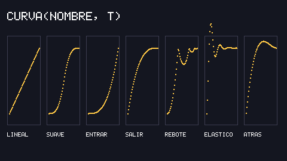
Captura real, sacada al generar esta página.docs/juego/ejemplos/910_suavizar.lince
Cámara
Cámara y temblor
juego.camara(x, y) desplaza todo lo que se dibuja después, para mundos más grandes que la pantalla; juego.camara() vuelve a (0, 0), para el marcador. juego.temblor(fuerza, segundos) sacude la pantalla, para un golpe o una explosión, y el marcador no tiembla.
importar"juego"importar"matematica"
juego.abrir("Cámara", 480, 270)
sea jugador = 300sea cam = 0mientras juego.abierto() {
jugador = jugador + 250 * juego.dt()
cam = juego.acercar(cam, jugador - 240, 6) # la cámara va detrás, sin tirones
juego.limpiar([150, 200, 240])
juego.camara(cam, 0)
para (i = 0; i < 40; i++) { # el mundo
juego.rectangulo(i * 120, 200, 110, 70, [90, 150 + (i % 2) * 20, 80])
juego.circulo(i * 120 + 60, 170, 18, [60, 120, 60])
}
juego.rectangulo(jugador, 170, 30, 30, [230, 140, 60])
juego.camara() # el marcador, quieto
juego.texto("CÁMARA X: {matematica.redondear(cam)}", 20, 20, {"escala": 2})
juego.presentar()
}
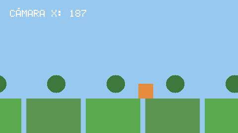
Captura real, sacada al generar esta página.docs/juego/ejemplos/1010_camara.lince
Zoom, giro y pantalla partida
juego.camara(x, y, opciones) admite zoom, giro (en grados) y zona, la parte de la pantalla donde se ve. Con dos zonas, cada jugador tiene su cámara: pantalla partida. El zoom y el giro van alrededor del centro, así que una cámara que ya seguía al jugador lo sigue igual. juego.a_mundo(juego.raton()) dice qué punto del mundo hay bajo el ratón, con cualquier cámara.
Captura real, sacada al generar esta página.docs/juego/ejemplos/1020_pantalla_partida.lince
Choques
¿Se tocan?
juego.colision(a, b) dice si se tocan dos cosas, cada una un punto [x, y] (un clic), una caja [x, y, ancho, alto] (un botón, un personaje; también un diccionario con x, y, ancho y alto) o un círculo {"centro": [x, y], "radio": r}.
juego.caja(cosa, x, y) da el rectángulo de lo que se ve de verdad al dibujar una imagen, una hoja o un animador, sin el hueco transparente de alrededor: para que los choques sean justos.
Captura real, sacada al generar esta página.docs/juego/ejemplos/1110_choques.lince
Mapas
Un nivel escrito con texto
juego.mapa.crear(filas, tamaño) hace un mapa de casillas a partir de texto, un carácter por casilla. juego.mapa.mover(mapa, cosa) mueve algo según su vx y su vy sin atravesar las paredes ("#", o las que se digan) y deja en en_suelo, techo y pared con qué chocó; la gravedad la sumas tú. juego.mapa.dibujar lo pinta, con un color o un tile para cada carácter.
Captura real, sacada al generar esta página.docs/juego/ejemplos/1210_mapa.lince
Tiles y tiles animados
Lo normal es pintar el nivel con una hoja de tiles: a cada carácter, [hoja, cuadro], o [hoja, [cuadros], segundos] para uno animado (el agua, las monedas). Los tiles se ajustan al tamaño de la casilla. juego.casilla y juego.mapa.poner leen y cambian una casilla (coger una moneda, abrir una puerta), y juego.mapa.buscar dice dónde están.
Captura real, sacada al generar esta página.docs/juego/ejemplos/1220_tiles.lince
Buscar el camino
juego.mapa.camino(mapa, [c1, f1], [c2, f2]) da el camino más corto entre dos casillas sin atravesar paredes, como lista de [columna, fila]: para enemigos que persiguen al jugador por un laberinto. Con un cuarto argumento verdadero también va en diagonal.
Captura real, sacada al generar esta página.docs/juego/ejemplos/1230_camino.lince
Mapas de Tiled
Niveles hechos con Tiled
Tiled es el editor de mapas gratuito más usado. juego.mapa.tiled(ruta) lee sus mapas (.tmx o .tmj) con sus tilesets, y da un mapa de Lince normal: juego.mapa.mover, juego.mapa.camino y las demás funciones sirven igual. Lo sólido se marca en Tiled: una capa llamada Colisiones, o la propiedad juego.mapa.solido en una capa o en un tile del tileset (o plataforma).
juego.mapa.dibujar_tiled(mapa, capas) lo dibuja con los tiles animados, girados y volteados, la opacidad y el paralaje de cada capa: el fondo antes del personaje y lo de delante después. Los objetos que se pusieron en Tiled (dónde empieza el jugador, las monedas) vienen en mapa["objetos"].
Captura real, sacada al generar esta página.docs/juego/ejemplos/1310_tiled.lince
Un pueblo isométrico
Los mapas isométricos de Tiled (casillas en rombo, aquí de 32 × 16) se leen igual, con juego.mapa.tiled. Todo se piensa en su rejilla lógica, de casillas cuadradas del alto del rombo: ahí están los objetos de Tiled y ahí trabajan mapa.mover, mapa.camino y mapa.solido. juego.mapa.a_dibujo(mapa, cosa) dice dónde se dibuja (y mapa.a_mapa, al revés).
Para pasar por delante y por detrás de árboles y casas: los tiles con {"ordenar": 1} van cada uno a la capa 1 más su profundidad, y el personaje a juego.capa(1 + juego.mapa.profundidad(mapa, yo)). Las piezas grandes, cada una de su tamaño, son un tileset de imágenes sueltas; los objetos con imagen se dibujan con mapa.dibujar_objeto.
importar"juego"importar"matematica"
juego.abrir("Pueblo", 384, 216, {"escala": 2, "escala_entera": verdadero})
juego.definir_accion("izquierda", ["izquierda", "a", "mando:izq_x-"])
juego.definir_accion("derecha", ["derecha", "d", "mando:izq_x+"])
juego.definir_accion("arriba", ["arriba", "w", "mando:izq_y-"])
juego.definir_accion("abajo", ["abajo", "s", "mando:izq_y+"])
fijo PUEBLO = juego.mapa.tiled("recursos/pueblo.tmx")
sea yo = {"x": 0, "y": 0, "ancho": 8, "alto": 8, "vx": 0, "vy": 0}
sea arboles = []
paracadadiccionario cosa en PUEBLO["objetos"] {
si cosa["tipo"] == "jugador" {
yo["x"] = cosa["x"]
yo["y"] = cosa["y"]
}
si cosa["tipo"] == "arbol" { arboles.agregar(cosa) }
}
mientras juego.abierto() {
# las flechas mueven en la pantalla; en la rejilla lógica, eso es en diagonalsea dx = juego.direccion("izquierda", "derecha")
sea dy = juego.direccion("arriba", "abajo")
sea v = matematica.normalizar(dy + dx / 2, dy - dx / 2)
yo["vx"] = v[0] * 50
yo["vy"] = v[1] * 50
juego.mapa.mover(PUEBLO, yo)
sea p = juego.mapa.a_dibujo(PUEBLO, yo)
juego.camara(p[0] - 192, p[1] - 108)
juego.limpiar([30, 40, 60])
juego.mapa.dibujar_tiled(PUEBLO, "suelo")
juego.mapa.dibujar_tiled(PUEBLO, "piezas", {"ordenar": 1})
paracadadiccionario a en arboles { juego.mapa.dibujar_objeto(PUEBLO, a, {"ordenar": 1}) }
juego.capa(1 + juego.mapa.profundidad(PUEBLO, yo))
juego.circulo(p[0], p[1], 5, [0, 0, 0, 80]) # la sombra
juego.circulo(p[0], p[1] - 7, 6, [235, 150, 60])
juego.capa(0)
juego.presentar()
}
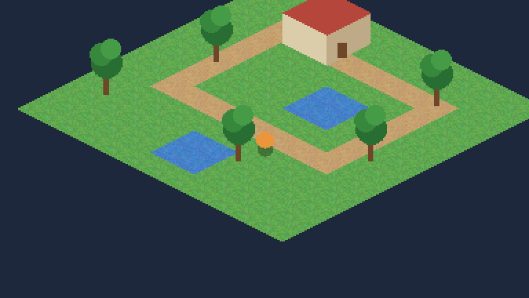
Captura real, sacada al generar esta página.docs/juego/ejemplos/1320_isometrico.lince
Física
Cajas, pelotas y ascensores
juego.fisica.mundo() hace un mundo con gravedad (y, si se le da, un mapa con el que chocar), y juego.fisica.cuerpo(mundo, datos) le añade cuerpos: cajas o círculos (radio) con masa, rebote y friccion. juego.fisica.avanzar(mundo) lo mueve todo en cada fotograma: caen, rebotan, se empujan según su masa y se apilan.
Un cuerpo fijo no lo mueve nada; con vx o vy es una plataforma o un ascensor que lleva lo que tiene encima. Uno sensor no choca, solo avisa de lo que toca (juego.fisica.tocando), para monedas o zonas. Los cuerpos son diccionarios normales: el personaje puede ser uno más.
Captura real, sacada al generar esta página.docs/juego/ejemplos/1410_fisica.lince
Cuerpos que giran
Con "gira": verdadero un cuerpo gira al chocar: vuelca, rueda y se apila de verdad, y lleva su angulo (en grados, el mismo que usa dibujar) y su vgiro (grados por segundo). Con "puntos" es un polígono convexo (una rampa, una cuña, una piedra), con los puntos medidos desde su x, y.
juego.fisica.dibujar(c, color) lo dibuja tal cual es, para probar o para juegos de formas; con imágenes se dibuja con juego.dibujar(imagen, c["x"], c["y"], {"angulo": c["angulo"]}), porque x, y siguen siendo la esquina de la caja sin girar.
importar"juego"
juego.abrir("Giros", 480, 270)
sea mundo = juego.fisica.mundo({"gravedad": 900})
juego.fisica.cuerpo(mundo, {"x": 0, "y": 250, "ancho": 480, "alto": 20, "fijo": verdadero})
juego.fisica.cuerpo(mundo, {"x": 0, "y": 130, "puntos": [[0, 0], [200, 90], [200, 120], [0, 120]], "fijo": verdadero}) # una rampapara (i = 0; i < 5; i++) {
juego.fisica.cuerpo(mundo, {"x": 360, "y": 220 - i * 31, "ancho": 30, "alto": 30, "gira": verdadero}) # una torre
}
juego.fisica.cuerpo(mundo, {"x": 20, "y": 90, "radio": 14, "gira": verdadero, "masa": 3}) # una bola por la rampa
juego.fisica.cuerpo(mundo, {"x": 250, "y": 20, "ancho": 50, "alto": 14, "gira": verdadero, "angulo": 35})
juego.fisica.cuerpo(mundo, {"x": 300, "y": 0, "puntos": [[0, 30], [15, 0], [30, 30]], "gira": verdadero}) # un triángulomientras juego.abierto() {
juego.fisica.avanzar(mundo)
juego.limpiar([25, 30, 45])
paracadadiccionario c en mundo["cuerpos"] {
juego.fisica.dibujar(c, si c["fijo"] { [70, 80, 110] } sinosi c.contiene("radio") { [240, 120, 90] } sino { [200, 150, 80] })
}
juego.presentar()
}
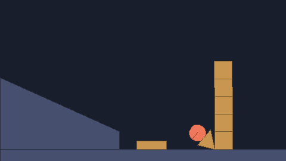
Captura real, sacada al generar esta página.docs/juego/ejemplos/1420_giros.lince
Cuerdas y bisagras
juego.fisica.bisagra(mundo, a, b, [x, y]) clava dos cuerpos por ese punto y los deja girar (con b nulo, clava a al fondo): puertas, péndulos, cadenas. juego.fisica.cuerda(mundo, a, b) no deja que se alejen más que el largo de la cuerda, pero sí acercarse; b puede ser un punto fijo [x, y], y con "rigida": verdadero es una barra.
juego.fisica.puntos_union(u) dice por dónde dibujar la cuerda. Lo que está unido por una bisagra no choca entre sí; con cuerda, sí.
importar"juego"
juego.abrir("Uniones", 480, 270)
sea mundo = juego.fisica.mundo({"gravedad": 900})
juego.fisica.cuerpo(mundo, {"x": 0, "y": 250, "ancho": 480, "alto": 20, "fijo": verdadero})
# un puente de tablas, clavado por los dos ladossea anterior = nulopara (i = 0; i < 8; i++) {
sea tabla = juego.fisica.cuerpo(mundo, {"x": 40 + i * 30, "y": 120, "ancho": 30, "alto": 8, "gira": verdadero})
juego.fisica.bisagra(mundo, tabla, anterior, [40 + i * 30, 124])
anterior = tabla
}
juego.fisica.bisagra(mundo, anterior, nulo, [280, 124])
juego.fisica.cuerpo(mundo, {"x": 140, "y": 40, "ancho": 26, "alto": 26, "gira": verdadero, "masa": 2})
# una bola colgada de una cuerda, que empieza de ladosea bola = juego.fisica.cuerpo(mundo, {"x": 300, "y": 40, "radio": 14, "gira": verdadero})
sea cuerda = juego.fisica.cuerda(mundo, bola, [400, 30])
mientras juego.abierto() {
juego.fisica.avanzar(mundo)
juego.limpiar([25, 30, 45])
sea p = juego.fisica.puntos_union(cuerda)
juego.linea(p[0][0], p[0][1], p[1][0], p[1][1], [230, 230, 200])
paracadadiccionario c en mundo["cuerpos"] {
juego.fisica.dibujar(c, si c["fijo"] { [70, 80, 110] } sinosi c.contiene("radio") { [240, 120, 90] } sino { [200, 150, 80] })
}
paracadadiccionario u en mundo["uniones"] {
si u["union"] == "bisagra" {
sea b = juego.fisica.puntos_union(u)[0]
juego.circulo(b[0], b[1], 2, [255, 255, 255])
}
}
juego.presentar()
}
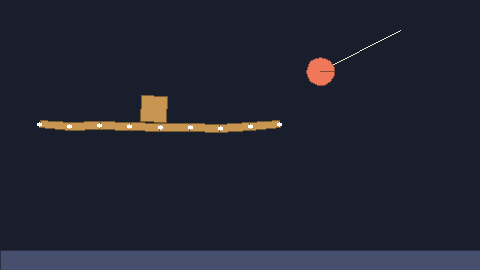
Captura real, sacada al generar esta página.docs/juego/ejemplos/1430_uniones.lince
Partículas
Chispas, polvo y explosiones
juego.particulas(x, y, opciones) lanza un puñado de partículas y juego.dibujar_particulas() las mueve y las dibuja en cada fotograma. Opciones: cantidad, color y color_final, velocidad, direccion y apertura (en grados), vida, tamaño y tamaño_final, gravedad y mezcla ("sumar" para que brillen). Las que admiten [mínimo, máximo] toman un valor al azar para cada una.
Captura real, sacada al generar esta página.docs/juego/ejemplos/1510_particulas.lince
Escenas
Portada, partida y final
Un juego tiene partes: la portada, la partida, la pantalla final... juego.cambiar_escena("partida", 0.6) pasa a otra con un fundido a negro de 0,6 segundos; juego.escena() dice en cuál se está y juego.escena_nueva() es verdadero en su primer fotograma, para prepararla. La captura es de la mitad del fundido.
Captura real, sacada al generar esta página.docs/juego/ejemplos/1610_escenas.lince
Menús y diálogos
Menús
juego.menu(opciones) dibuja un menú y devuelve la opción elegida en el fotograma en que se elige (si no, nulo). Se llama en cada fotograma mientras se vea, y se maneja igual con teclado (flechas o WASD, entrar), mando (cruceta o palanca, A) o ratón y dedo. Con "atras", escape o B devuelven esa opción: lo que hace falta en una pausa.
Captura real, sacada al generar esta página.docs/juego/ejemplos/1710_menu.lince
Diálogos
juego.dialogo(páginas) abre una caja con el texto saliendo letra a letra. Cada página puede llevar quién habla (nombre), un retrato y respuestas para elegir; la elegida la da juego.respuesta(). Aceptar termina de escribir la página o pasa a la siguiente, y las páginas largas se parten solas. Mientras juego.dialogo_abierto() sea verdadero, el juego no debería mover al personaje.
importar"juego"
juego.abrir("Diálogo", 480, 270)
fijo LINCE = juego.hoja("recursos/lince.png", 16)
juego.dialogo([
{"nombre": "Lince", "texto": "Llevo días viendo luces raras entre los árboles, de noche."},
{"nombre": "Lince", "retrato": LINCE, "texto": "¿Me acompañas a ver qué son?", "respuestas": ["Claro que sí", "Mejor otro día"]}
])
mientras juego.abierto() {
juego.limpiar([46, 92, 58])
juego.dibujar(LINCE, 300, 90, {"escala": 4})
juego.presentar()
}
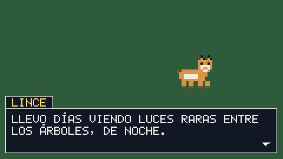
Captura real, sacada al generar esta página.docs/juego/ejemplos/1720_dialogo.lince
Idiomas
Cada idioma es un archivo idiomas/en.txt junto al juego, con líneas Jugar = Play. juego.traducir(t) da la traducción, o el texto tal cual si no la hay; los {} se cambian por valores. menu() enseña sus textos traducidos y sigue devolviendo el original. El idioma se elige solo (el del sistema, o el que eligió el jugador con juego.menu_idiomas()); aquí se elige a mano con juego.idioma("en").
Captura real, sacada al generar esta página.docs/juego/ejemplos/1730_idiomas.lince
Controles
La pantalla de opciones
juego.menu_opciones() es la pantalla de opciones de cualquier juego, ya hecha: el volumen de la música, los efectos y las voces, la pantalla completa, los controles (si hay acciones) y el idioma (si hay idiomas). Arriba y abajo para elegir, izquierda y derecha para cambiar, y atrás (o «Volver») para salir: entonces devuelve "volver". También con el ratón y el dedo.
Lo que se cambia se aplica en el acto y se guarda solo: la próxima vez que se abra el juego vuelve a aplicarse sin hacer nada. En «Accesibilidad» están el tamaño del texto, los subtítulos (de los sonidos con {"subtitulo": "Puerta"}), un filtro para daltonismo y quitar el temblor y los destellos. Las opciones propias del juego van en "propias" (una lista para elegir, sí o no, o un número), y el juego las lee con juego.opcion(clave, defecto).
Captura real, sacada al generar esta página.docs/juego/ejemplos/1805_opciones.lince
Que el jugador elija sus teclas
juego.menu_controles() enseña cada acción con sus teclas y sus botones, y deja cambiarlos: se elige una y se pulsa lo nuevo. Si otra acción ya lo usaba, se intercambian. Lo cambiado se guarda solo y se aplica solo la próxima vez que el juego defina esa acción, sin hacer nada más. Devuelve "volver" al salir. juego.restablecer_controles() vuelve a los del juego.
Captura real, sacada al generar esta página.docs/juego/ejemplos/1810_controles.lince
Varios jugadores, cada uno con su mando
Cada mando es un jugador, y el teclado otro. juego.menu_jugadores() es la pantalla de «pulsa un botón para unirte»: el que pulsa A (o ENTRAR) se une, B (o ESCAPE) se va, e INICIO (o ENTRAR) empieza; devuelve la lista de juego.jugadores(). Para hacer una propia, juego.unirse() en cada fotograma.
Las acciones se definen una vez, como siempre, con "mando:a". Después, juego.accion("saltar", 2) o juego.direccion("izquierda", "derecha", 2) son las del jugador 2, que solo miran su mando (o el teclado, si es el suyo). juego.pantalla_partida(n) da la zona de la pantalla de cada uno, para camara(). Si un mando se desconecta, conserva su número: al volver a conectarlo, es el mismo jugador.
importar"juego"
juego.abrir("Jugadores", 480, 270)
juego.definir_accion("izquierda", ["izquierda", "a", "mando:izquierda", "mando:izq_x-"])
juego.definir_accion("derecha", ["derecha", "d", "mando:derecha", "mando:izq_x+"])
juego.definir_accion("arriba", ["arriba", "w", "mando:arriba", "mando:izq_y-"])
juego.definir_accion("abajo", ["abajo", "s", "mando:abajo", "mando:izq_y+"])
fijo COLORES = [[240, 120, 90], [90, 180, 240], [130, 220, 110], [240, 210, 90]]
sea jugando = nulosea sitios = []
mientras juego.abierto() {
juego.limpiar([25, 30, 45])
si jugando == nulo {
jugando = juego.menu_jugadores({"titulo": "¿QUIÉN JUEGA?"})
si jugando == "volver" { romper }
si jugando != nulo { paracadadiccionario j en jugando { sitios.agregar([100 + j["numero"] * 60, 120]) } }
} sino {
paracadadiccionario j en jugando { # cada uno se mueve con lo suyosea s = sitios[j["numero"] - 1]
s[0] = s[0] + juego.direccion("izquierda", "derecha", j["numero"]) * 150 * juego.dt()
s[1] = s[1] + juego.direccion("arriba", "abajo", j["numero"]) * 150 * juego.dt()
}
sea zonas = juego.pantalla_partida(jugando.longitud())
paracadadiccionario j en jugando { # cada uno, su trozo de pantalla siguiéndolesea z = zonas[j["numero"] - 1]
sea s = sitios[j["numero"] - 1]
juego.camara(s[0] - z[2] / 2, s[1] - z[3] / 2, {"zona": z})
juego.rectangulo(-400, -400, 1400, 1100, [40, 48, 70])
para (x = -400; x < 1000; x += 60) { juego.linea(x, -400, x, 700, [60, 70, 100]) }
para (y = -400; y < 700; y += 60) { juego.linea(-400, y, 1000, y, [60, 70, 100]) }
para (k = 0; k < sitios.longitud(); k++) {
juego.rectangulo(sitios[k][0] - 10, sitios[k][1] - 10, 20, 20, COLORES[k])
}
juego.camara()
juego.texto("JUGADOR {j["numero"]}", z[0] + 8, z[1] + 8, {"color": COLORES[j["numero"] - 1]})
}
si jugando.longitud() == 2 { juego.rectangulo(juego.ancho() / 2 - 1, 0, 2, juego.alto(), [0, 0, 0]) }
}
juego.presentar()
}
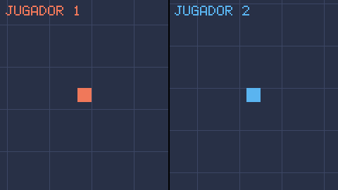
Captura real, sacada al generar esta página.docs/juego/ejemplos/1820_jugadores.lince
Partidas guardadas
Guardar y cargar
juego.guardar_partida("partida", datos) guarda números, textos, listas y diccionarios, y juego.cargar_partida("partida", por_defecto) los recupera (o da por_defecto si no hay nada). Van a la carpeta del usuario de cada sistema (en el móvil, la de la app), una por juego, sin pensar en rutas. Si el juego se cierra mientras guarda, lo de antes sigue entero. juego.olvidar_partida("partida") lo borra.
Con un diccionario por defecto, lo que falte en lo guardado se toma de ahí: una opción nueva de una versión posterior del juego tiene valor desde el principio.
la primera vez: {"musica": 0.8, "idioma": es}
después: {"musica": 0.3, "idioma": es}
la partida: {"nivel": 4, "vidas": 2, "llaves": ["roja", "azul"]}
olvidada: nulo
docs/juego/ejemplos/1910_partidas.lince
Tareas
Esperar sin parar el juego
Una tarea se escribe como una función, pero puede esperar(segundos) sin parar el juego: avanza sola en cada juego.presentar(). Va muy bien para lo que pasa poco a poco: un parpadeo, un enemigo que patrulla, una cuenta atrás, una cinemática. t.terminada() dice si acabó y t.parar() la para.
Captura real, sacada al generar esta página.docs/juego/ejemplos/2010_tareas.lince
Peleas
Golpes que se notan
Para juegos de lucha, cada animación del animador puede decir con qué golpea cada cuadro ("golpes": [cuadro, x, y, ancho, alto]), y juego.golpe(pj, x, y) da esa caja colocada donde se dibuja, o nulo si en ese cuadro no golpea. Con "cancelar", desde ese cuadro se puede encadenar otro golpe, y juego.libre(pj) dice si ya se puede.
Lo que hace que un golpe pese: juego.congelar(0.05) (un parón de unas centésimas), juego.temblor(3) y el destello blanco en quien lo recibe. Además, juego.combo(["abajo", "derecha", "zarpazo"]) reconoce combinaciones, juego.mantenida() los golpes cargados y juego.pulsaciones() machacar un botón.
Captura real, sacada al generar esta página.docs/juego/ejemplos/2110_peleas.lince
Compartir el juego
Un ejecutable, un .zip, un .apk
lince compilar hace un ejecutable con el juego dentro (el código, lo que importa y las imágenes, sonidos, fuentes y mapas que nombra), que funciona sin instalar Lince. lince repartir hace una carpeta y un .zip listos para compartir, con SDL2 dentro.
Para el móvil, --android hace el .apk para instalarlo y --aab el paquete que pide Google Play, firmados por Lince sin Java ni el SDK de Android. Cada versión nueva lleva un --version mayor.
lince compilar mi_juego.lince -o mi_juego
lince repartir mi_juego.lince # mi_juego-linux.zip o mi_juego-windows.zip
lince repartir mi_juego.lince --incluir niveles # con una carpeta que el código no nombra
lince repartir mi_juego.lince --android --nombre "Mi juego" --id org.tunombre.mijuego
lince repartir mi_juego.lince --aab --version 2
Enemigos
Un guardia con cabeza
juego.pensar(cosa, estados) lleva lo que hace un enemigo según su estado: cada estado tiene su función "hacer" (en cada fotograma; si devuelve el nombre de otro estado, pasa a ese) y, si quieres, "entrar" y "salir". Los nombres los pones tú, y la cosa guarda su "estado" y su "tiempo_estado". Desde fuera, juego.cambiar_estado(cosa, nombre).
juego.ve(cosa, objetivo) mira si lo ve, hasta una distancia, con su vision (lo ancho que ve, en grados) y con las paredes de un mapa tapando. juego.patrullar y juego.seguir (con "mapa", por el camino más corto) dicen hacia dónde ir, y juego.dirigir lo pone en la cosa, poco a poco si se le da rapidez.
Captura real, sacada al generar esta página.docs/juego/ejemplos/1240_guardia.lince
En bandada
Cada movimiento devuelve una velocidad [vx, vy], y juego.mezclar los suma con su peso (sin pasar de un máximo): aquí cada murciélago va en_grupo con los demás (sin chocarse, sin separarse y hacia donde van ellos) y rodear la farola, que sigue al ratón.
Hay también huir (con "lejos": hasta dónde huye) y esquivar (se aparta de las paredes de un mapa o de una lista de cosas: es [0, 0] si no hay nada cerca, para mezclarlo con otro). Todo está escrito en Lince, y se puede usar suelto o hacerlo a tu manera.
importar"juego"importar"matematica"
juego.abrir("Bandada", 480, 270)
matematica.semilla(7)
sea murcielagos = []
para (i = 0; i < 14; i++) {
murcielagos.agregar({"x": matematica.aleatorio(0, 480), "y": matematica.aleatorio(0, 270), "vx": 0, "vy": 0})
}
sea farola = [240, 135]
mientras juego.abierto() {
sea r = juego.raton()
si r[0] > 0o r[1] > 0 { farola = r }
paracadadiccionario m en murcielagos {
sea v = juego.mezclar([
[juego.en_grupo(m, murcielagos, 130, {"vecinos": 60}), 1],
[juego.rodear(m, farola, 70, 130), 1.5]
], 140)
juego.dirigir(m, v, 4)
m["x"] = m["x"] + m["vx"] * juego.dt()
m["y"] = m["y"] + m["vy"] * juego.dt()
}
juego.limpiar([20, 20, 40])
juego.circulo(farola[0], farola[1], 6, [255, 230, 150])
paracadadiccionario m en murcielagos {
sea ala = si matematica.seno(juego.tiempo() * 30 + m["y"]) > 0 { 4 } sino { -2 }
juego.poligono([[m["x"] - 8, m["y"] - ala], [m["x"], m["y"] + 2], [m["x"] + 8, m["y"] - ala]], [150, 120, 170])
}
juego.presentar()
}
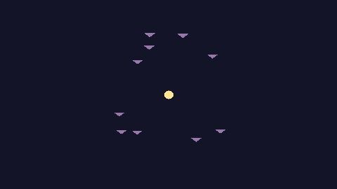
Captura real, sacada al generar esta página.docs/juego/ejemplos/1250_bandada.lince